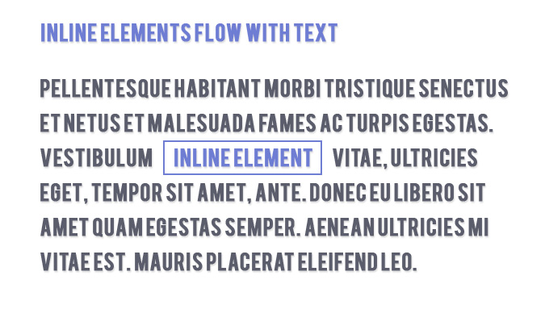

Today, I will be covering a couple HTML and CSS topics that I have recently learned. Hopefully my post can help someone else learn basic HTML/CSS. The first topic that I will be discussing is the difference between inline vs. inline blocks. I am still fairly new to this subject, so I still have much to learn. That being said, I will let you know what I have learned thus far.
For the purpose of styling your elements, you have several different options for displaying. Two of the most common elements for displaying your elements are inline and block- inline.
The easiest way to remember block elements is by considering that blocks typically start and end with a new line when displayed in the browser. So what does this mean for your page? Essentially, block elements break up the flow of your page. Consider the following image:

As you can see from the illustration above, a block-display element will also span the full width of the space available to it, and so will start on a new line in the flow of HTML. The flow will continue on a new line after the block- display element. Now that we have that down, lets move on to inline elements.
An inline element is just that, inline. These elements do not break up the flow of the page and do not result in text beginning on the next line. You can display inline elements within a text box and the text can continue right after the inline element. Take a look at this illustration for further proof:
As you can see here, the inline element does not break up the flow of text. It simply fits right in, allowing your text to continue flowing around the element. At the moment, this is the extent of my block vs. inline-block element knowledge. I will be sure to post additional 48useful resources as my knowledge grows.